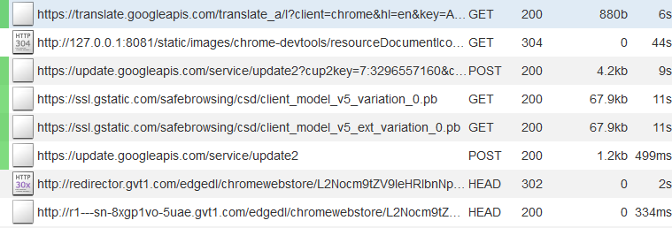
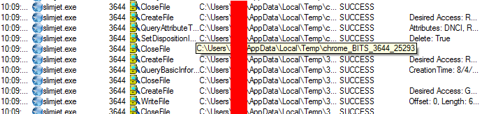
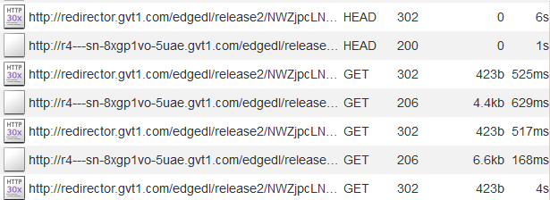
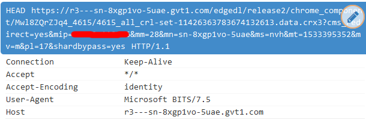
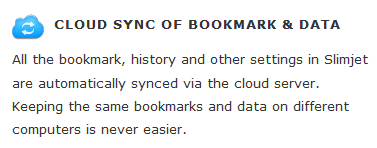

Slimjet
Slimjet is a clone of the SlimBrowser web browser from FlashPeak that uses the Chromium as a base.
Spyware Level: EXTREMELY HIGH
Slimjet's website claims that it is very committed to user privacy, and that it blocks Google tracking, unlike Google Chrome[1]. However, this claim is not true. Slimjet is constantly sending information to google and connecting to google services. Slimjet claims to be concerned about privacy but ultimately retains just about all of the spyware features found in Google Chrome, as well as additional spyware added on by FlashPoint. In this way, Slimjet manages to implement all of the spyware that is found in browsers like Google Chrome, except instead of one company having this information, it's split up among several companies...
Phoning Home
Even though on its site, FlashPeak claims that: "Slimjet doesn't send any usage data back to Google like Chrome."[1] the moment I turn it on with MITMproxy running, I am greeted with this:
So, this claim just isn't true at all. It's still got a lot of Google's spyware in it, if it's still connecting to so many Google services. What's kind of surprising is that it didn't seem to connect to any servers explicitly operated by FlashPeak when I was testing it. Even though, it claims to collect information about its users for internal usage.[2] So, it must be phoning home as well as sending information to Google. Maybe it sends information through some kind of Google web service?
Default Search Engine is Spyware
The default search engine is Bing, which sells your information to advertisers. If that isn't enough, it's "served from fpseek.com" which means that not only are you exposing your information to Bing, this is also being logged by fpseek, which has its own privacy policy[3]. Whenever you search something using the default search engine, requests are sent to both Bing and fpseek.
So, not only are you sharing everything with Microsoft, now there is another company looking at all of your searches. This is a uniquely bad default search engine because of how much information it leaks out. Fpseek itself is a company that seems to be tracking how users interact with advertisements and it says that it uses information it collects about its users to:
"...maintain and improve the quality and operation of the Software & Services, including, monitoring viewability of and interaction with advertisements, search results and other products and services provided by Company." [3]
So, it looks like your searches are sent to two advertising companies instead of just one. At the very least when the search engine is changed to an alternative like DuckDuckGo the requests to fpseek stop.
Collecting Information about Users
Slimjet claims to collect "some anonymous feature usage statistics information", and claims not to record your IP or sell that information to advertisers. However, it is still opt-out spyware.
Using the Microsoft BITS service to upload search history to Google servers
When you start Slimjet, it will begin using the BITS (Background Intelligent Transfer Service) which is designed to use spare bandwidth to transfer updates and other information. These requests are sent between Slimjet and a Google server, with confirmation from Process Monitor and MITMproxy:
  Personal information was censored from these images. It's unclear what this is for specifically but this is probably being done to implement the "CLOUD SYNC OF BOOKMARK & DATA" that is advertised on Slimjet's website. This is probably how they upload all of your search history and bookmarks into their cloud services, which seem to be provided by Google. There are no other features or requests made that would require large amounts of data to be sent to an external server in this way, so by process of elimination this is my theory as to how it's implemented.
Obviously you can tell that any kind of service to sync your search history "in the cloud" is a privacy nightmare. Now both Google and Slimjet have access to your search history...